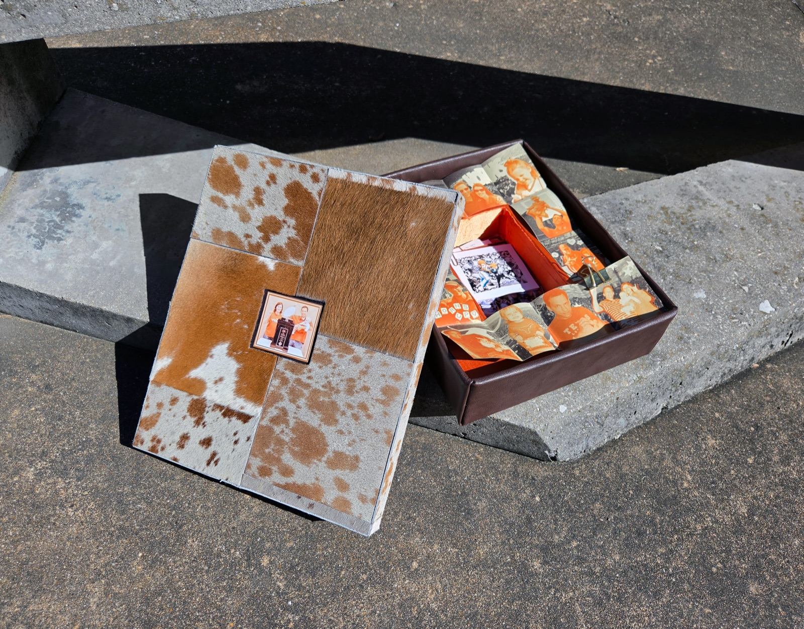
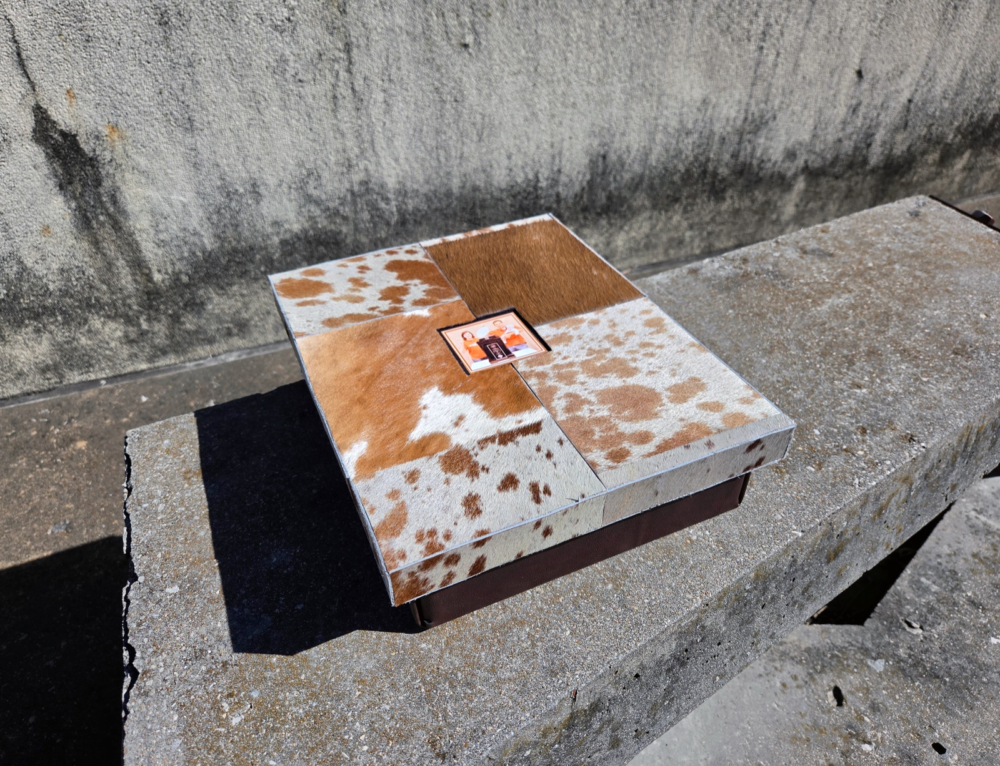
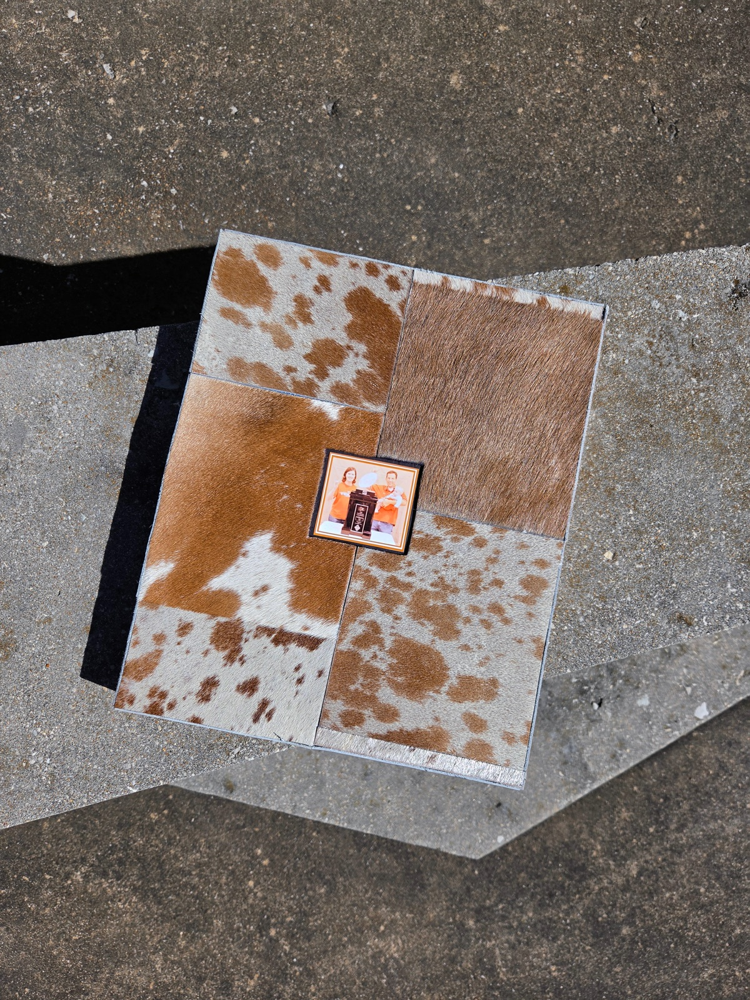
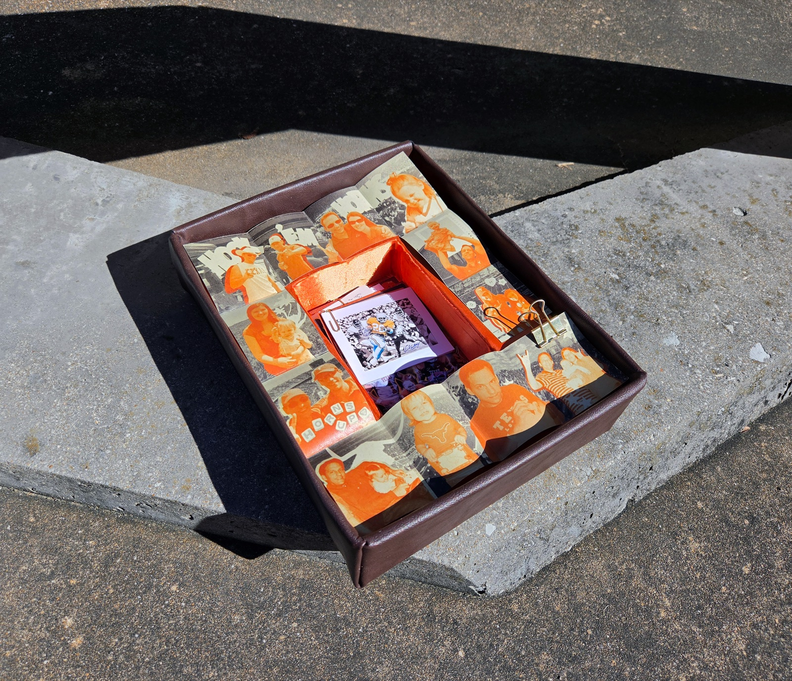
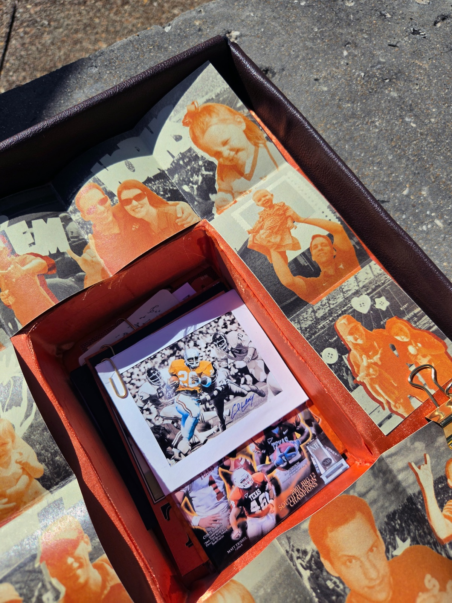
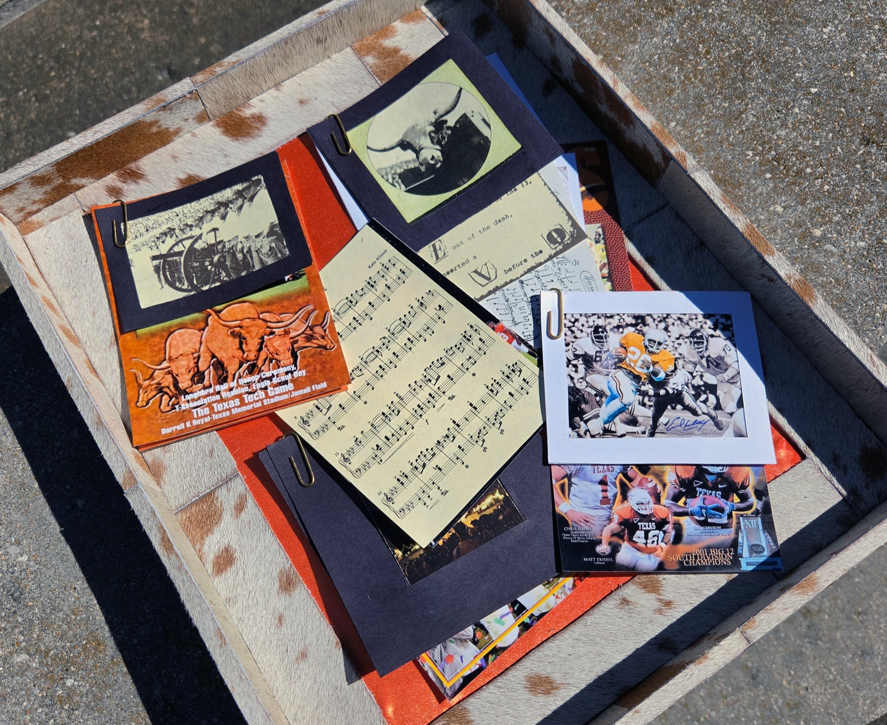

Burnt Orange Saturdays
- Material Exploration
- Book Arts
- Archival Research
For as long as I can remember, Saturdays have meant game days. Every fall, my family gathers to watch Texas Longhorns football, a ritual that has remained constant through years of moving and change. Burnt Orange Saturdays translates that tradition into a shoebox-sized memory box, lined with cow fur, leather, and burnt orange satin. Its two chambers hold distinct but connected collections of family history and Longhorns memorabilia, each inviting exploration in either order.
Concept
Over eighteen years, my family moved through eight houses, but Longhorns football remained a constant source of pride, excitement, and connection. I wanted to capture both the energy of the fan experience and the unfolding of my own life around the team. The box brings these histories together, allowing viewers to physically explore the relationship between a personal family ritual and the wider culture surrounding it.




Book & Outer Chamber
The outer chamber holds a continuous unfolding book that traces my family's story. One side pairs sequential childhood photographs with images of games and family events from my parents' albums, using burnt orange to bring family members forward and emphasize their connection. The reverse follows the eight houses I have lived in alongside maps of their surrounding towns, placing a history of movement alongside the continuity of our shared tradition.
Ephemera & Inner Chamber
The inner chamber collects ephemera sourced from digital archives and Longhorn traditions, including fight song sheet music, mascot photographs, stadium imagery, and historic game programs. Printed on textured papers selected for their content, the pieces take on the character of found objects, bringing the wider history of the team into conversation with my family's own.
